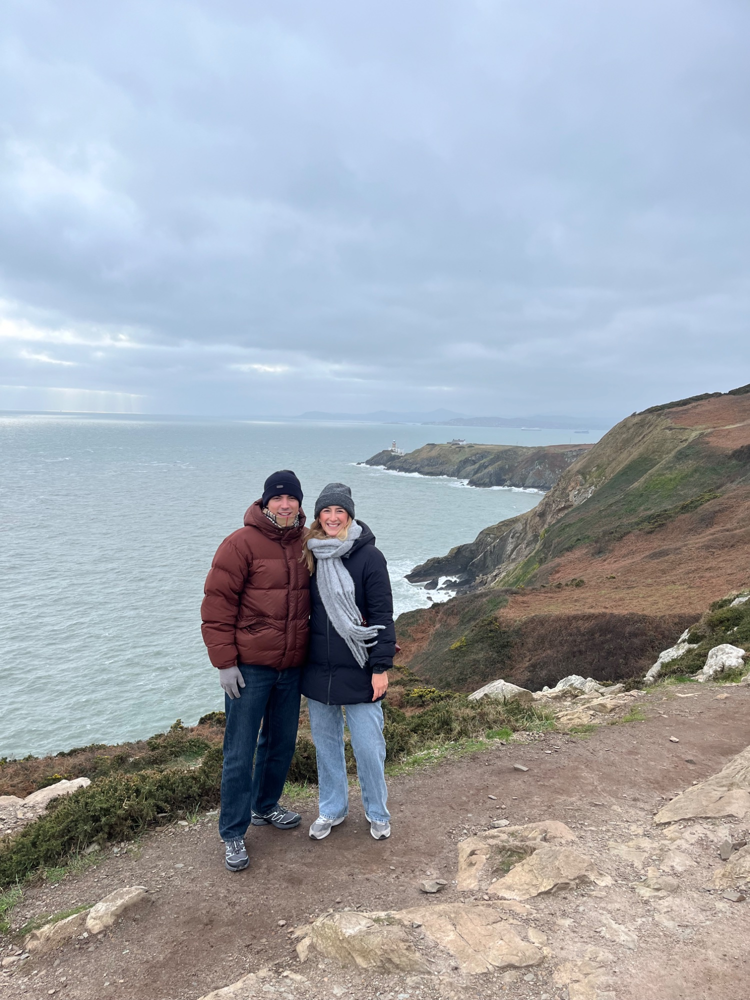

16 – 22 de agosto de 2026 · 115 km · 5 etapas
Mañana empieza el Camino 🎒 · Sarria nos espera
115 km · 5 etapas · 2 peregrinos · 1 aventura inolvidable
Ultreia et Suseia!

Hola, somos Isra y Eva. Llevamos tiempo mirando al norte — sobre todo a esas tierras gallegas que tanto nos atrapan — y hemos decidido que ya es hora de ponernos las botas y peregrinar hasta Santiago.
Es un reto personal, un reto de pareja, y una excusa perfecta para vivir algo grande juntos. Aquí podréis seguirnos día a día: compartiremos cada etapa, cada paisaje y todo lo que el Camino nos dé.
¡No podemos esperar!
Ver la ruta completa →